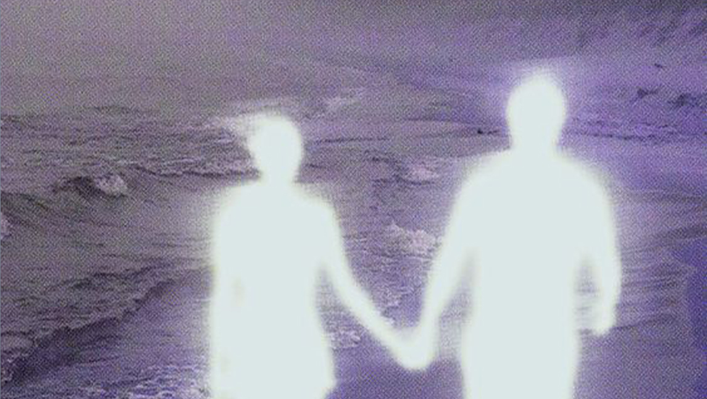

Cuando nos preguntan cuántos años tenemos, iniciamos la cuenta a partir del día que nacimos, dejando en evidencia que los meses previos que vivimos en el vientre materno quedan en sombra. Tenemos interiorizado que nuestra vida se inicia en el nacimiento y nos organizamos conscientemente a partir de allí, sin considerar el impacto de nuestras vivencias, experiencias y emociones vividas en el útero como parte relevante de nuestra existencia.
Hasta ahora la ciencia ha considerado que el cerebro y el sistema nervioso central eran causa y origen de la conducta y de la psique humana, viendo en el embrión solo genes, células, tejidos y procesos biológicos y bioquímicos, en lugar de ver en él a un ser consciente. Sin embargo, se ha comprobado que las memorias de lo vivido en este periodo quedan guardadas en nuestras células y se evidencian en nuestro cuerpo, en nuestra manera de comportarnos y en nuestra forma de relacionarnos y pueden manifestar como sueños recurrentes, pensamientos, hábitos, miedos, síntomas, etc.
Según la psicología pre y perinatal, nuestra biografía empieza el día de nuestra concepción. No nos convertimos en personas en algún momento de nuestra vida, sino que nos desarrollamos como personas desde que somos concebidos, porque desde el inicio ya tenemos nuestra propia identidad y personalidad única. Por lo tanto, muchas de nuestras conductas y formas de responder ante las situaciones que se nos presentan en la vida adulta no provienen de nuestra infancia sino desde el inicio de nuestra gestación en el útero materno.
Hay innumerables evidencias que todas aquellas experiencias vividas durante los nueve meses de nuestra gestación dejan huellas impactantes en nuestro desarrollo como seres humanos. En los treinta años que me dedico a trabajar con la Técnica de Decodificación de la Memoria Celular, he podido comprobarlo en innumerables casos. Por ejemplo, personas que sintieron que decepcionaban a sus padres o madres porque ya sabían antes de nacer que no eran el varón o la nena que ellos hubieran deseado. Como consecuencia algunos desarrollaron una sentimiento de no ser suficientes, de baja autoestima, otros mucha autoexigencia para dejarlos contentos, o se sobreadaptaron por miedo a ser rechazados.
En las últimas décadas, diferentes psicólogos y psicoterapeutas han descubierto casos tanto de adultos como niños/as que recuerdan espontáneamente sus vidas prenatales y sus nacimientos y que estos recuerdos han sido corroborados por registros hospitalarios o por la información facilitada por sus padres y madres.
Recuerdo el caso de una joven que no tenía ninguna dificultad biológica para ser madre pero no podía quedar embarazada. Durante la consulta apareció que durante su gestación ella había sentido mucho miedo a morir. Al hablar con su madre, descubrió que ella había perdido varios embarazos antes de su llegada y que tenía pánico a que volviera a suceder. En un segundo encuentro pudimos liberar ese miedo a la pérdida guardado en su memoria inconsciente y al poco tiempo me llamó para contarme que estaba esperando mellizos.
La psicóloga Wendy Anne McCarty, autora del libro “La conciencia del bebé antes de nacer”, documenta experiencias que han demostrado que somos seres conscientes y sensibles desde el inicio de la vida, y que existimos como seres sensibles desde antes de nuestra vida física y que así ha sido desde el comienzo de la existencia humana. Muchas culturas antiguas lo corroboran. De hecho, sus costumbres en torno al momento del nacimiento y el cuidado del embarazo son totalmente coherentes con los descubrimientos que está realizando la ciencia contemporánea, y se hallan a años luz de las erróneas prácticas seguidas en la vida modernas. De hecho, en los países de Oriente, en la época antigua, al momento de nacer ya se celebraba el primer año de vida, dado que consideraban que nuestra existencia no se iniciaba con el nacimiento sino en el mismo momento que fuimos concebidos.
Si podemos ampliar nuestra percepción para incluir estas memorias que nos constituyen, comprobaremos que empezamos a vivir antes de nacer y recordaremos que llegamos al mundo plenamente conscientes desde el inicio de la vida.